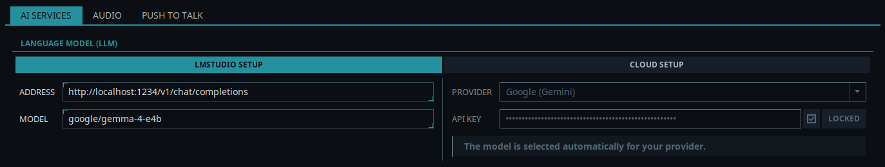

Elegir tu LLM
Elite Intel necesita un modelo de lenguaje (LLM) para entender tus órdenes y responder a tus preguntas. Hay dos formas de conseguirlo, y las dos se configuran en Servicios → Servicios de IA → Modelo de lenguaje (LLM):
| Opción | Qué necesitas | Coste |
|---|---|---|
| Local: LM Studio | Una GPU potente, LM Studio y el modelo google/gemma-4-e4b |
Gratis. Todo se queda en tu PC |
| Nube | Una cuenta y una clave API de un proveedor compatible | El proveedor te cobra lo que uses |

Opción 1: Local (LM Studio)
El lado izquierdo del panel, LMStudio:
| Campo | Valor |
|---|---|
| Dirección | http://localhost:1234/v1/chat/completions. Si LM Studio corre en otro PC de tu red, pon la IP de ese PC en lugar de localhost |
| Modelo | google/gemma-4-e4b |
LM Studio es el único servidor de inferencia local que admite Elite Intel, y google/gemma-4-e4b
es el único modelo local admitido. Hay dos formas de ejecutarlo.
En tu PC de juego: Elite Intel lo configura
Si tu PC puede ejecutar el juego y el modelo a la vez, aparece un botón bajo los campos de LMStudio. Pulsa Instalar LM Studio y Elite Intel:
- instala LM Studio, en la unidad que elijas,
- descarga
google/gemma-4-e4b(unos 6 GB), - lo carga en tu tarjeta gráfica y comprueba que de verdad ha ido allí,
- lo prueba y rellena Dirección y Modelo por ti.
Cada paso se muestra mientras ocurre, con una barra de progreso para la descarga. Si un paso falla, el diálogo dice cuál y por qué, y al pulsar el botón de nuevo se sigue desde ahí. Cuenta con unos 10 GB de espacio en disco. LM Studio es software gratuito de Element Labs y no forma parte de Elite Intel.
A partir de ahí, Elite Intel inicia LM Studio cuando inicias sus servicios y lo detiene cuando los detienes o cierras la aplicación, así que el modelo solo usa la memoria de tu tarjeta gráfica mientras Elite Intel está en marcha. Para quitarlo, pulsa Desinstalar LM Studio: muestra lo que va a borrar antes de borrar nada.
El botón solo aparece con una NVIDIA RTX 3090 (24 GB) o superior. El juego ocupa 8,5 GB de memoria de vídeo o más y el modelo unos 6 GB, y el navegador, OBS y Windows también usan algo, así que una tarjeta más pequeña no aguanta ambos con fiabilidad. Las tarjetas AMD aún no se detectan: si tienes una, sigue la guía de AMD.
¿Ya tienes LM Studio? Entonces el botón dice Configurar LM Studio. Añade el modelo y rellena los campos, y por lo demás deja tu LM Studio exactamente como está: Elite Intel nunca inicia, detiene ni quita un LM Studio que hayas instalado tú.
En un segundo PC: configúralo tú
Si tu PC de juego no puede con el juego y el modelo a la vez, ejecuta LM Studio en otro PC de tu red que no haga nada más que ejecutar el modelo, y pon su dirección en Dirección. Así el PC de juego no hace ningún trabajo de inferencia.
El PC del LLM necesita:
- 12 GB de memoria de vídeo, que dejan margen para el modelo,
- potencia de cálculo de la clase RTX 3080 o superior. Una tarjeta más lenta puede cargar el modelo, pero responde demasiado despacio para ser útil.
Hay una tabla de referencia de GPU elaborada por Kevin Rank aquí: Guía de referencia de GPU
| Guía | |
|---|---|
| LM Studio - Linux | Instalación por línea de comandos y ejecución como servicio desde el arranque |
| LM Studio - Windows | Instalación por línea de comandos e inicio al iniciar sesión |
| LM Studio en Ubuntu Server | Instalación headless en una máquina dedicada a la inferencia |
| LLMs en la serie AMD RX | Configuración específica para AMD |
¿Por qué precisamente google/gemma-4-e4b?
Elite Intel es un intérprete de órdenes y una herramienta de análisis de datos, no un chatbot de conversación. No basta con charlar de forma natural. El modelo tiene que deducir la acción correcta a partir de lo que dices, analizar los datos del juego y devolver resultados estructurados en lugar de una redacción o HTML. No todos los modelos de este tamaño lo hacen de forma fiable.
El requisito imprescindible es el function calling (llamada a funciones). El companion de Elite
Intel no le pide al modelo que describa lo que haría. Le da un conjunto de herramientas y espera
que llame a una, con argumentos. Un modelo que no sabe generar una llamada a herramienta bien
formada no puede manejar la aplicación en absoluto, por bien que escriba. google/gemma-4-e4b
admite function calling.
Con unos 6,3 GB cabe en la VRAM junto al juego en una tarjeta de 24 GB con margen de sobra. No se descarga nada a la CPU, así que las respuestas siguen siendo rápidas.
Sobre el modelo retirado de la V1.0. Las versiones anteriores recomendaban
tulu-3.1-8b-supernova. No admite function calling, así que no puede hacer funcionar el companion y ya no sirve con Elite Intel. Si sigues una guía antigua, ignórala e instalagoogle/gemma-4-e4b.
Opción 2: Nube
El lado derecho del panel, Configuración en la nube:
- Elige tu proveedor en la lista Proveedor.
- Pega la clave de ese proveedor en Clave API.
- Marca Bloqueado para que la clave guardada no se edite por accidente.
- Pulsa Guardar y luego inicia o reinicia los servicios en la pestaña Vega.
El proveedor lo eliges tú. Elite Intel no intenta adivinarlo a partir de la clave, porque los proveedores cambian el formato de sus claves con demasiada frecuencia como para que eso sea fiable. El modelo no lo eliges: Elite Intel escoge el adecuado para tu proveedor.
| Proveedor | Notas |
|---|---|
| Anthropic (Claude) | De pago |
| OpenAI | De pago |
| Google (Gemini) | De pago |
| xAI (Grok) | De pago |
| DeepSeek | De pago |
Cómo conseguir una clave de cada proveedor: Configurar un LLM en la nube.
¿Cuál debería usar?
Ejecuta LM Studio en local si:
- tu PC de juego tiene una NVIDIA RTX 3090 24 GB o superior: Elite Intel lo configura por ti
- o tienes un segundo PC en tu red con 12 GB de memoria de vídeo y potencia de la clase RTX 3080
- quieres que todo se quede en tu propio hardware
Usa un proveedor en la nube si:
- tu GPU no puede ejecutar el modelo junto al juego y no tienes un segundo PC para ello
- prefieres no tener ningún servidor de inferencia
¿No lo tienes claro? Puedes empezar con cualquiera de las dos opciones y cambiar cuando quieras sin reinstalar nada.
Community 👉Matrix👈